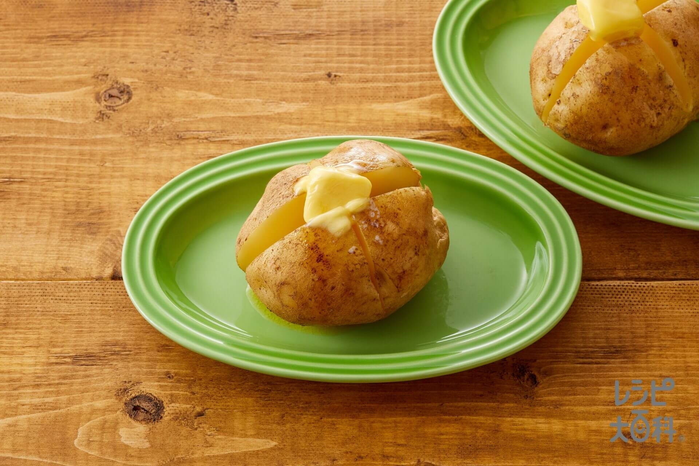

Potato with butter

What is a potato with butter?
It is Simon's utmost specialty. A true delight everytime. Not only is it incredibly healthy and nutrious, it is also a explosion of flavours that will satisfy your taste buds more than anything you could ever wish for.
Ingredients needed
- Potato (the bigger the better)
- Butter
Directions
- Peel potato
- Poke several holes through the potato with a fork
- Microwave for around 10 minutes, flipping the potato halfway through
- Once cooked, garnish with butter and enjoy the best meal you've had in a long time. You're welcome!